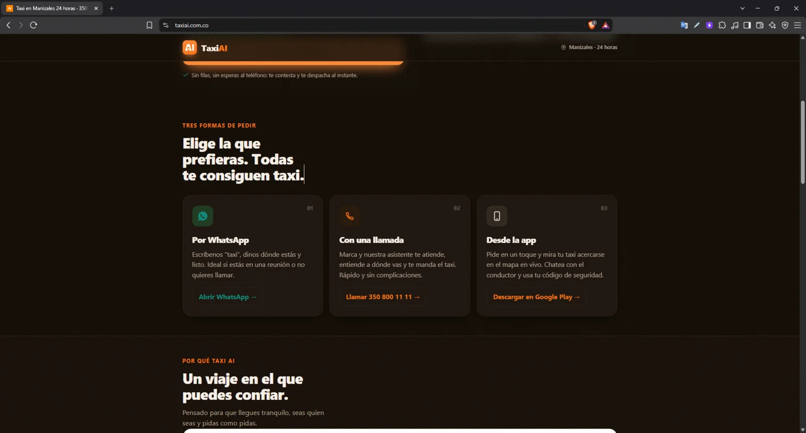
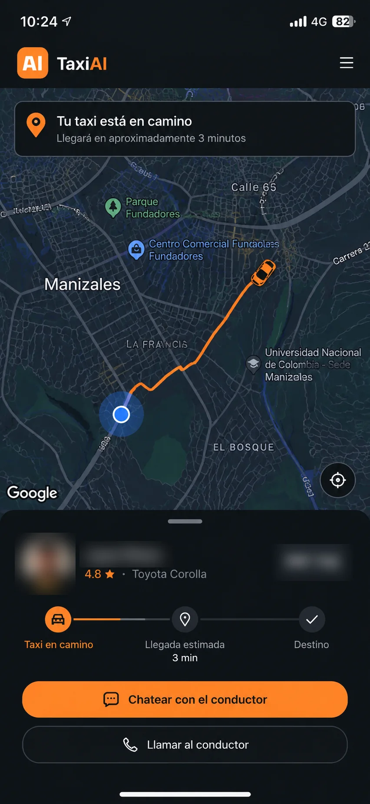
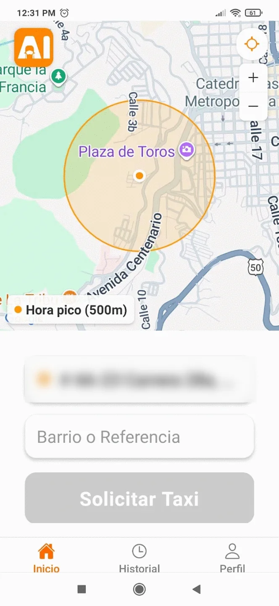
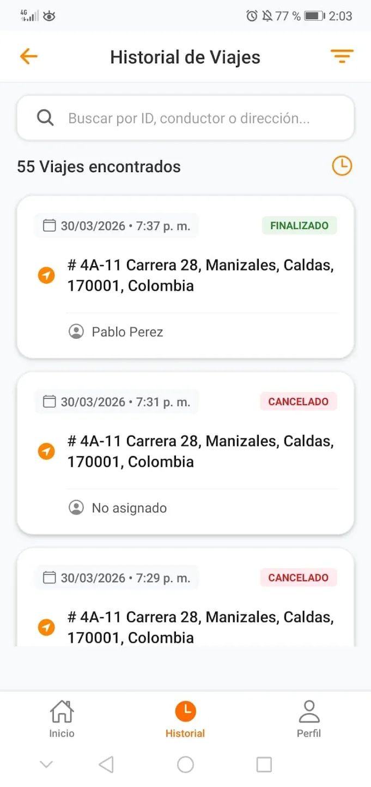
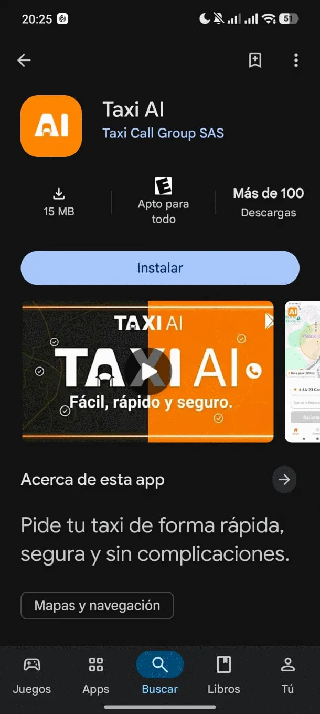
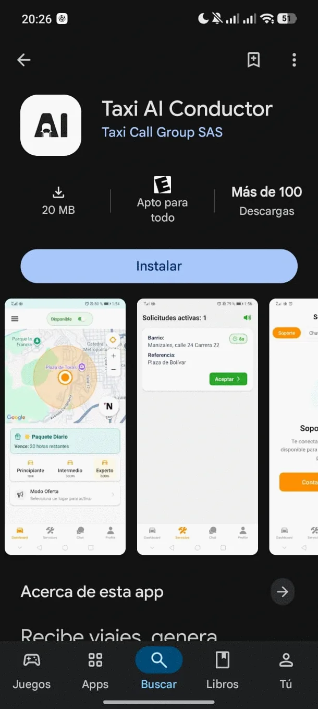

Taxi AI
Una empresa de taxis despachaba a mano decenas de miles de llamadas por mes. Construí la IA que atiende el teléfono, entiende la dirección hablada del pasajero y asigna el conductor sola, sin que intervenga una persona. También las dos apps móviles publicadas, la landing y el panel de operación.
- 500+conductores
- 50.000+llamadas por mes
- 35.000+reservas por mes
- ~70%menos trabajo manual
Las cifras de operación son datos informados por el cliente.







Panel de despacho con las llamadas y los viajes del día, solicitudes activas, la flota en el mapa y el detalle del viaje en curso.
La landing pública del servicio.
Los tres canales de pedido, por WhatsApp, por teléfono y desde la app.
Seguimiento del viaje en tiempo real, con la ruta y el chat con el conductor.
Pedido desde la app. El círculo es el radio de búsqueda de conductores en hora pico.
Historial de viajes del pasajero, con el estado de cada uno.
La app de pasajero, publicada en Google Play.
La app de conductor, publicada en Google Play.
Tocá una captura para verla grande
El problema
La central recibía decenas de miles de llamadas por mes y cada una la atendía una persona que escuchaba la dirección, la ubicaba y llamaba por radio a un conductor. El cuello de botella era humano y no escalaba.
Cada llamada la atendía una persona que escuchaba la dirección, la ubicaba y llamaba por radio a un conductor.
La llamada se atiende sola, entiende la dirección hablada y despacha. El operador solo mira.
Lo que construí
- Endpoint en Node.js que recibe las llamadas y los audios desde Asterisk.
- Transcripción del audio con Whisper y extracción de la dirección con un modelo de lenguaje.
- Geocodificación con Google Maps y cerco geográfico sobre Manizales y Villamaría.
- Respuesta hablada generada con TTS y convertida a formato telefónico con FFMPEG.
- Dialplan propio en Asterisk para el enrutamiento, la consulta a conductores y la derivación directa.
- Asignación por radio variable de 500 a 1.900 metros según la franja horaria.
- Sensor de cuelgue que cancela el viaje en la base automáticamente.
- Alta automática del pasajero que llama por primera vez.
- Dos apps Android publicadas, una de pasajero con seguimiento en mapa, chat con el conductor y código de seguridad, y otra de conductor.